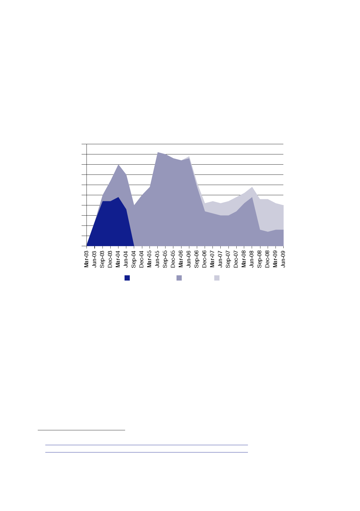

15.1 | Civilian
personnel
902.
Figure 4 shows
the number of DFID staff and contractors deployed to
Basra
between
2003 and 2009.
903.
The underlying
data, reproduced in Table 9 at the end of this Section, show
that,
between
June and December 2006, DFID deployments to Basra more than
halved,
from 44
to 21.591
The number
of personnel recovered to 29 in June 2008, but never
returned to
the level seen between June 2005 and June 2006, or during the
earlier
CPA period.
50
45
40
35
30
25
20
15
10
5
0
ORHA/CPA
Basra
DFID
Basra
Basra
PRT
904.
Data on
civilian personnel compiled by the US Government during the CPA
period
shared many
of the flaws of UK data for the same period. An audit of CPA
personnel
management
by the Office of the CPA Inspector General in June 2004 found
that:
“… by the
end of January 2004, many distinct personnel tracking
mechanisms
appeared
that were intended to provide accountability for select groups
of
individuals.
In addition, contractors were tracking their own employees. As
of
March 8,
2004, the CPA believed it had a total of 1,196 personnel assigned
to
CPA
operations in Baghdad. The CPA had been authorized 2,117
positions.
The 1,196
included all military and civilian personnel assigned to CPA
operations
591
Letter
Lowcock to Aldred, 24 June 2013, [untitled] attaching Table,
[untitled].
592
Letter
Lowcock to Aldred, 24 June 2013, [untitled] attaching Table,
[untitled].
593
Office of
the Inspector General Coalition Provisional Authority, Audit Report
Number 04‑002, 25 June
2004,
Management
of Personnel Assigned to the Coalition Provisional Authority in
Baghdad, Iraq.
401